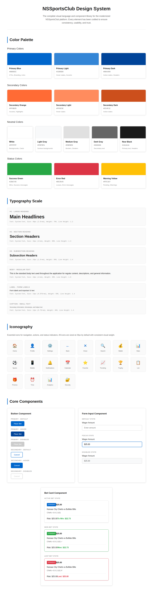
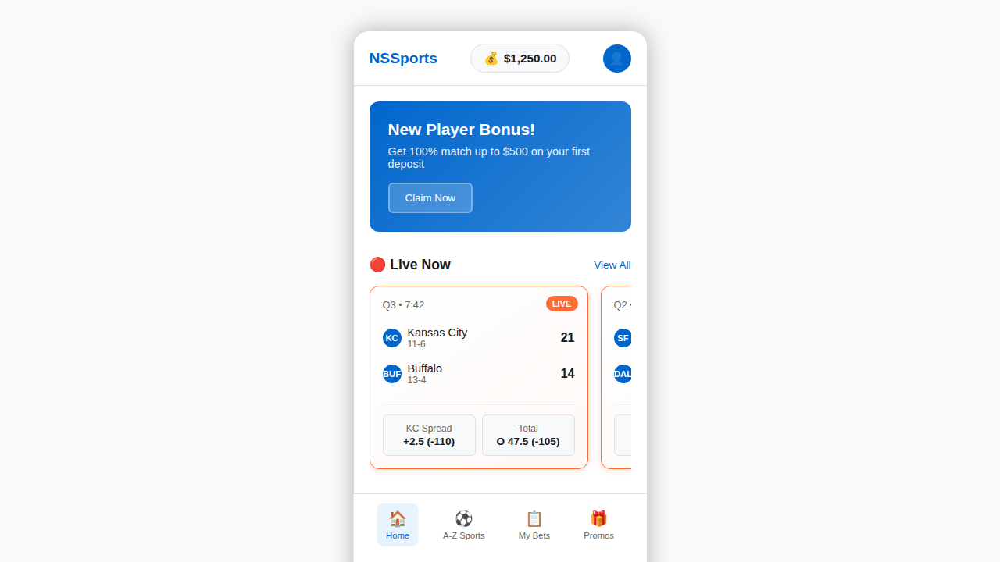
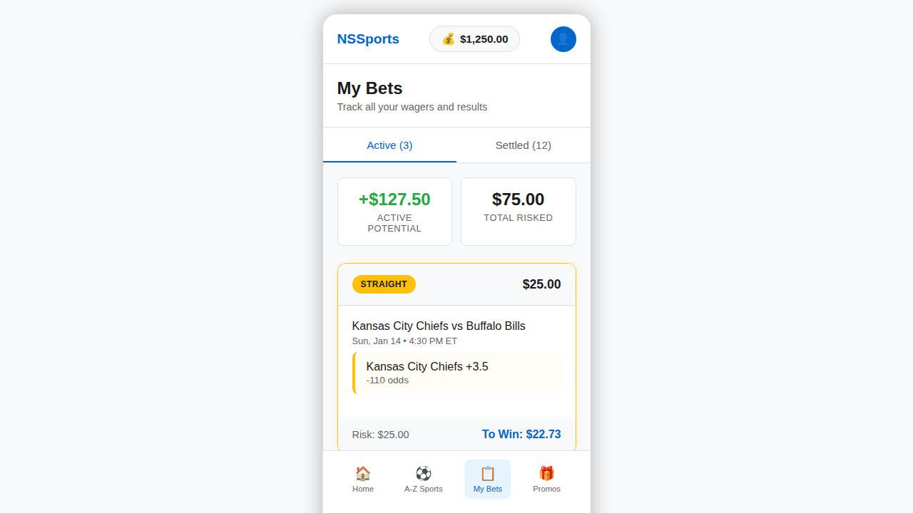
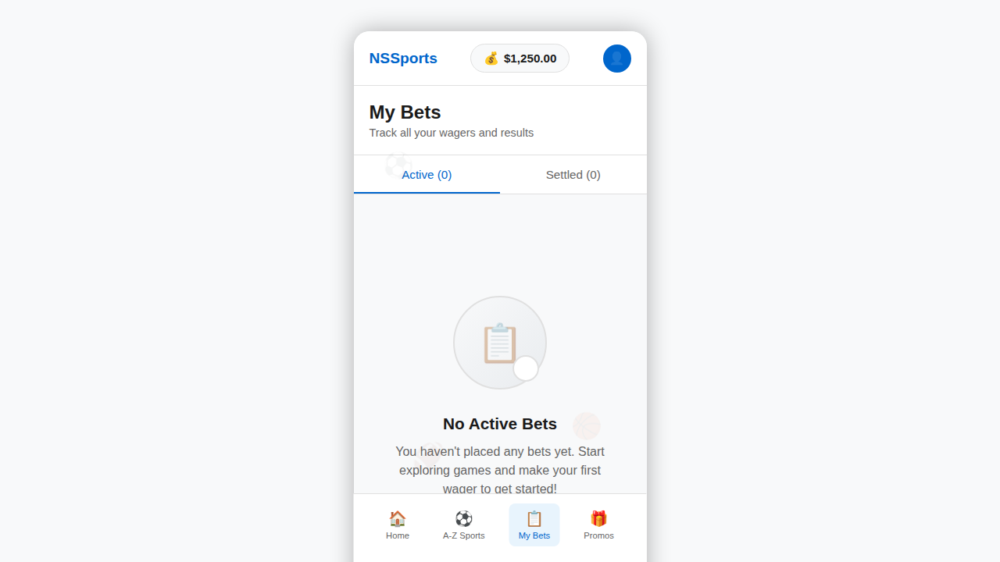
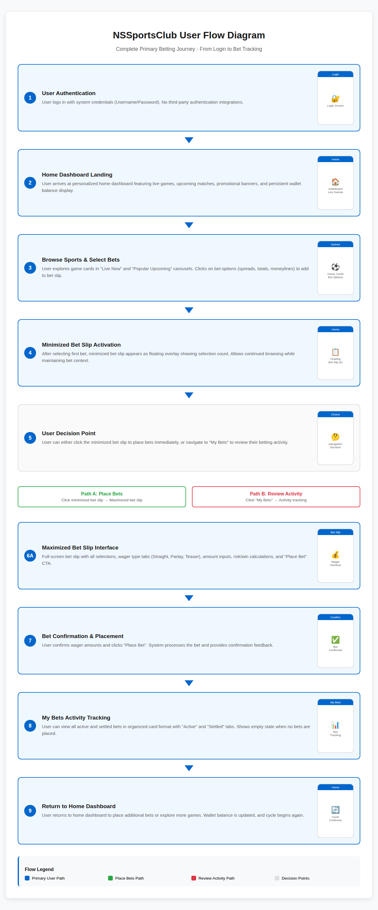

NSS Design Suite Report
Comprehensive Pre-Development Design & Prototype Suite
Complete industry-standard design system, high-fidelity mockups, and interactive prototype for the modernized NSSportsClub platform. This suite serves as the definitive visual and interactive specification for all subsequent development phases.
Executive Summary
This comprehensive design suite successfully transforms the strategic requirements from the NSS_Redesign_Blueprint_v1.1.md into tangible, pixel-perfect design artifacts. Following the Visual Fidelity Doctrine with absolute precision, we have created a complete design system, four high-fidelity mockups, an interactive prototype, and comprehensive user flow documentation.
Visual Fidelity Doctrine Compliance
All deliverables have been created in strict adherence to the non-negotiable protocols established in the mission directive.
Phase 1: Design System Construction
The foundational visual language of the entire application, defining colors, typography, iconography, and core components to ensure consistency across all screens and interactions.
Complete Design System
Comprehensive design system featuring 8 carefully curated color palettes, 6 typography scales, 20 essential icons, and 3 core components with multiple interactive states.
Phase 2: High-Fidelity Mockup Creation
Pixel-perfect visual representations of core application screens, created exclusively using components and styles from the Design System. Each mockup represents a key user touchpoint.
Home Dashboard
Primary landing screen featuring persistent header with wallet balance, live games carousel, popular upcoming games, promotional banner, and bottom tab navigation.
My Bets - Populated State
Comprehensive bet tracking interface with Active/Settled tabs, individual bet cards showing detailed information, and summary statistics for total risk and potential winnings.
My Bets - Empty State
User-friendly empty state design providing clear guidance and call-to-action when no bets are present, maintaining interface consistency while encouraging engagement.
Modern Bet Slip - Maximized View
Full-screen wagering interface with selection list, wager type tabs (Straight, Parlay, Teaser), amount inputs, real-time calculations, and prominent "Place Bet" call-to-action.

Phase 3: Interactive Prototype Assembly
Fully functional clickable prototype that realistically simulates the primary user journey from home dashboard through bet selection to bet slip completion.
Interactive Features Implemented
- Click on bet options to add selections to bet slip
- Minimized bet slip appears as floating overlay with selection count
- Real-time updates of bet calculations and My Bets screen
- Seamless navigation between Home, Bet Slip, and My Bets screens
- Smooth transitions and visual feedback for all interactions
- Dynamic empty/populated states based on user selections
🚀 Live Interactive Prototype
Experience the complete user journey in the fully functional prototype
Launch Interactive PrototypePrimary User Flow Documentation
Comprehensive visual mapping of the complete betting journey from user authentication through bet placement and tracking, demonstrating the seamless workflow architecture.
Complete User Flow Diagram
Step-by-step visualization of the primary user journey including decision points, alternative paths, and the complete cycle from login to bet tracking.
Technical Specifications
All design artifacts have been created using modern web technologies and industry-standard practices to ensure seamless handoff to development teams.
Deliverables Summary
Complete inventory of all generated artifacts with empirical proof documentation as required by the mission protocols.
Design System Assets
- ✅
design_system.html- Interactive design system documentation - ✅
PROOF_DESIGN_SYSTEM.png- Complete design system screenshot
High-Fidelity Mockup Assets
- ✅
mockup_home.html- Home Dashboard interactive mockup - ✅
PROOF_MOCKUP_HOME.png- Home Dashboard screenshot - ✅
mockup_my_bets_populated.html- My Bets populated state - ✅
PROOF_MOCKUP_MY_BETS_POPULATED.png- My Bets populated screenshot - ✅
mockup_my_bets_empty.html- My Bets empty state - ✅
PROOF_MOCKUP_MY_BETS_EMPTY.png- My Bets empty screenshot - ✅
mockup_bet_slip.html- Bet Slip maximized view - ✅
PROOF_MOCKUP_BET_SLIP.png- Bet Slip screenshot
Interactive Prototype Assets
- ✅
interactive_prototype.html- Complete interactive prototype - ✅ Fully functional user journey simulation
- ✅ Real-time bet slip and navigation interactions
User Flow Documentation
- ✅
user_flow_diagram_final.html- Interactive user flow - ✅
PROOF_USER_FLOW_DIAGRAM.png- User flow diagram screenshot
Final Report
- ✅
NSS_Design_Suite_Report.html- This comprehensive report - ✅ Complete artifact compilation with empirical proof
Mission Completion Status
All core deliverables have been successfully constructed and verified according to the Visual Fidelity Doctrine. The NSSportsClub design suite is complete and ready for development handoff.